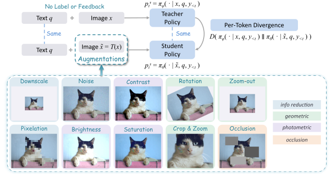
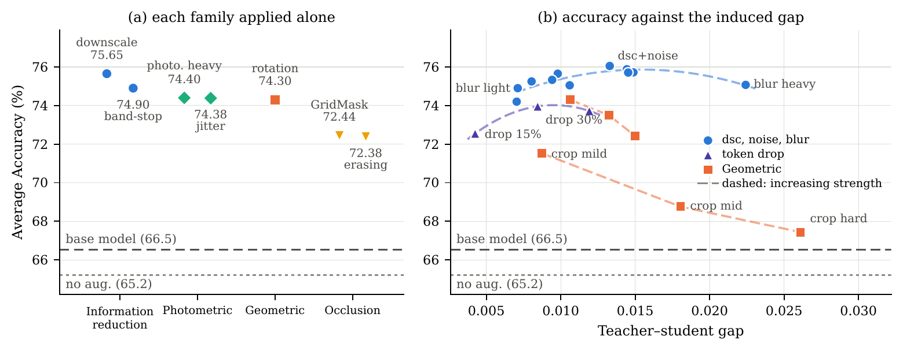

Overview of S2VOD. The student generates rollouts from a corrupted view of the image; an EMA teacher scores the same generated prefixes under the clean view; a top-k generalized JSD transfers the teacher's better-informed token distributions to the student. The augmentation applied to the student view is the sole source of supervision — and the object of our study.
Visual on-policy distillation relies heavily on an informative teacher–student asymmetry, through either a larger, stronger teacher or privileged supervision such as reference answers or ground-truth regions of interest. This raises a fundamental question: where can informative asymmetry come from when nothing privileged is available?
We answer this by inverting where the asymmetry comes from. Rather than adding privileged information to the teacher, we subtract information from the student. This creates the same effective learning signal for free as a teacher with access to information unavailable to the student — without ground-truth annotations, rewards, or a separate stronger teacher model. Building on this principle, we introduce Self-Supervised Visual On-Policy Distillation (S2VOD): the teacher's distribution conditioned on the original image is distilled on-policy into the student distribution conditioned on a strongly augmented view of the same image.
To understand what makes augmentation-induced asymmetry useful, we systematically explore a broad design space of visual augmentations and uncover that (1) asymmetry matters: all four augmentation families improve performance, while symmetric self-distillation degrades it; (2) strength matters: performance peaks at a moderate strength; and (3) the gap must remain task-consistent: augmentations that completely remove the question-relevant evidence induce large but uninformative discrepancies. These findings lead to a simple default instantiation: downscaling with stochastic Gaussian noise. Across six fine-grained perception benchmarks, S2VOD improves Qwen3.5-4B from 70.7% to 77.4% — above every open-source model compared, up to Qwen3-VL at 235B — while on the annotation-bearing Vision-OPD corpus it recovers 96% of the improvement achieved by the supervised Vision-OPD (76.6%).
Let \(\pi_\theta\) be the policy being optimized and \(\pi_\phi\) its exponential-moving-average teacher, \(\phi \leftarrow (1-\eta)\phi + \eta\theta\). For each image–question pair \((x, q)\), a stochastic transformation \(T \sim \mathcal{T}\) produces the student view \(\tilde{x} = T(x)\) while the teacher keeps the clean view \(x\). The student samples rollouts from its corrupted view, and the training objective minimizes the expected per-token divergence between teacher and student, evaluated along the student's own trajectories:
\(D\) is the generalized Jensen–Shannon divergence at \(\alpha = 0.5\), restricted to the teacher's top-\(k\) tokens and renormalized. No reward, value function, or KL-to-reference penalty is used — this divergence is the entire training signal.
The transformation \(T\) is the sole source of the teacher's informational advantage. Among a broad design space of four augmentation families — information reduction, geometric, photometric, and occlusion — the champion recipe is strikingly simple:
Downscale every student view to 0.3–0.6× resolution (without resizing back — fewer visual tokens), then add DDPM-style Gaussian noise (\(\sigma \approx 0.11\)) with probability 0.5. Bonus: lower-resolution student inputs make rollouts and forward passes cheaper.
Every augmentation family improves over the base model (info reduction 75.65, photometric 74.40, geometric 74.30, occlusion 72.44 vs. base 70.58) — while symmetric self-distillation with no augmentation degrades it to 65.21.
Performance follows an inverted U in the induced teacher–student gap: accuracy rises with the token-level JSD up to ≈0.014, then declines. Moderate downscaling (0.3–0.6×) beats both weaker and stronger settings.
Aggressive cropping produces the largest gap in our study yet the worst results (71.53 → 68.76 → 67.44 with strength): once the augmentation removes the evidence the question needs, a bigger discrepancy stops being an informative signal.

(a) Each augmentation family applied alone. (b) Accuracy vs. the teacher–student predictive gap (token-level JS divergence over the first ten training steps): an inverted U, with crop configurations falling off the curve.
S2VOD post-trained on FineVision (zero annotations), against open-source, proprietary, and privileged-information methods on six fine-grained perception benchmarks (accuracy %, unweighted average). Post-training lifts Qwen3.5-4B from 70.68 to 77.44 — above Qwen3-VL-Instruct-235B (75.75), tying the 397B Qwen3.5, beating the GPT-5 series, and matching Gemini-3-Flash.
| Method | V* | Zoom | HR-4K | HR-8K | MME-RW | MME-RW-CN | Avg |
|---|---|---|---|---|---|---|---|
| Open-source models | |||||||
| MiniCPM-V-4.5 (9B) | 70.68 | 42.60 | 69.63 | 61.50 | 62.65 | 61.64 | 61.45 |
| Qwen2.5-VL-7B | 78.53 | 42.49 | 71.62 | 67.88 | 60.80 | 58.30 | 63.27 |
| MiMo-VL-RL (7B) | 83.25 | 45.68 | 73.50 | 69.38 | 62.73 | 55.89 | 65.07 |
| Qwen3-VL-4B | 80.10 | 40.24 | 78.25 | 72.88 | 63.47 | 63.63 | 66.43 |
| Thyme (7B) | 82.20 | 45.09 | 77.00 | 72.00 | 64.80 | 64.59 | 67.61 |
| DeepEyesV2 (7B) | 81.68 | 44.97 | 77.88 | 73.75 | 64.90 | 65.07 | 68.04 |
| DeepEyes (7B) | 85.86 | 46.51 | 75.13 | 72.63 | 64.10 | 64.09 | 68.05 |
| Qwen3-VL-Instruct (8B) | 84.82 | 42.96 | 79.63 | 75.25 | 63.19 | 64.61 | 68.41 |
| GLM-4.5V (108B) | 83.25 | 49.23 | 81.63 | 74.88 | 66.04 | 60.71 | 69.29 |
| Qwen3.5-4B (base) | 84.29 | 47.69 | 84.38 | 80.13 | 63.86 | 63.70 | 70.68 |
| GLM-4.6V (106B) | 86.91 | 50.06 | 82.13 | 78.88 | 65.57 | 65.62 | 71.53 |
| Kimi-K2.6 (1T) | 88.48 | 53.14 | 81.88 | 78.00 | 69.22 | 66.13 | 72.81 |
| SenseNova-MARS (8B) | 92.15 | 47.81 | 83.13 | 78.38 | 67.90 | 68.90 | 73.05 |
| Kimi-K2.5 (1T) | 85.86 | 56.33 | 81.87 | 75.38 | 71.51 | 68.40 | 73.23 |
| Qwen3-VL-Instruct (235B) | 91.10 | 56.09 | 86.13 | 80.38 | 71.74 | 69.04 | 75.75 |
| Qwen3.5 (397B) | 87.96 | 57.16 | 89.38 | 85.50 | 74.82 | 69.82 | 77.44 |
| Proprietary models | |||||||
| GPT-5.1 | 70.16 | 47.22 | 67.00 | 65.25 | 64.04 | 55.57 | 61.54 |
| GPT-5.2 | 79.06 | 50.89 | 81.12 | 78.38 | 72.60 | 68.80 | 71.81 |
| GPT-5.4 | 76.96 | 52.66 | 84.00 | 77.88 | 74.20 | 70.93 | 72.77 |
| Gemini-3-Flash | 86.39 | 59.29 | 87.88 | 85.00 | 74.86 | 72.62 | 77.67 |
| Gemini-3.5-Flash | 89.01 | 61.42 | 89.12 | 86.62 | 75.31 | 73.97 | 79.24 |
| Gemini-3.1-Pro | 87.96 | 61.18 | 89.63 | 86.88 | 76.53 | 73.31 | 79.25 |
| w/ privileged info. | |||||||
| ZwZ-7B | 88.48 | 55.62 | 75.38 | 73.25 | 66.21 | 66.96 | 70.98 |
| Opsd | 81.68 | 52.54 | 81.25 | 77.75 | 71.91 | 71.96 | 72.85 |
| ZwZ-4B | 92.67 | 55.74 | 81.75 | 79.50 | 68.52 | 68.09 | 74.38 |
| ZwZ-8B | 91.10 | 58.11 | 84.38 | 82.00 | 69.87 | 70.59 | 76.01 |
| Vision-OPD | 92.15 | 59.76 | 84.50 | 80.38 | 74.88 | 70.76 | 77.07 |
| w/o privileged info. (ours) | |||||||
| S2VOD (Vision-OPD corpus) | 87.43 | 57.99 | 84.88 | 83.62 | 72.87 | 71.29 | 76.35 |
| S2VOD | 91.48 | 55.98 | 86.38 | 82.00 | 76.13 | 72.66 | 77.44 |
Every trainable baseline trained on the same corpus at both scales; bold / underline = best / second-best per column within each base model; §best checkpoint of a step-5–65 sweep. S2VOD beats every unsupervised method (TTRL, Intuitor, RENT) at both scales and every privileged method at 4B, while being the only method at the top of perception and math simultaneously — privileged methods trade math for perception, and intrinsic-reward RL keeps math but barely moves perception.
| Perception | Math reasoning | |||||||||
|---|---|---|---|---|---|---|---|---|---|---|
| Method | V* | Zoom | HR-4K | HR-8K | MME-RW | MME-RW-CN | MathVista | MathVerse | MathVision | Avg |
| Qwen3.5-4B | ||||||||||
| Base model | 84.29 | 47.69 | 84.38 | 80.13 | 63.86 | 63.70 | 75.80 | 67.56 | 65.26 | 70.30 |
| w/ privileged info. | ||||||||||
| ZwZ‡ | 92.67 | 55.74 | 81.75 | 79.50 | 68.52 | 68.09 | 71.80 | 40.48 | 52.17 | 67.86 |
| Opsd | 85.86 | 59.88 | 84.25 | 76.75 | 74.70 | 73.40 | 72.80 | 66.17 | 55.92 | 72.19 |
| Vision-OPD | 91.10 | 61.42 | 82.12 | 80.38 | 74.38 | 69.98 | 79.40 | 71.68 | 62.50 | 74.77 |
| w/o privileged info. | ||||||||||
| Intuitor§ | 81.15 | 51.24 | 83.75 | 82.38 | 57.50 | 59.57 | 81.80 | 71.98 | 65.23 | 70.51 |
| RENT§ | 80.63 | 51.01 | 82.88 | 81.62 | 58.55 | 60.93 | 80.47 | 72.64 | 66.74 | 70.61 |
| TTRL§ | 85.96 | 55.62 | 83.00 | 81.88 | 69.85 | 65.56 | 80.80 | 71.68 | 65.33 | 73.30 |
| S2VOD (ours) | 87.43 | 57.99 | 84.88 | 83.62 | 72.87 | 71.29 | 81.50 | 73.22 | 65.13 | 75.33 |
| Qwen3.5-9B | ||||||||||
| Base model | 82.72 | 52.07 | 85.75 | 80.63 | 71.40 | 67.67 | 78.80 | 70.25 | 66.91 | 72.91 |
| w/ privileged info. | ||||||||||
| ZwZ-8B | 91.10 | 58.11 | 84.38 | 82.00 | 69.87 | 70.59 | 76.00 | 56.45 | 57.01 | 71.72 |
| Opsd | 87.43 | 61.18 | 84.75 | 81.88 | 74.10 | 72.00 | 75.10 | 70.10 | 58.98 | 73.95 |
| Vision-OPD | 89.01 | 63.43 | 86.00 | 85.12 | 69.95 | 68.92 | 83.00 | 74.64 | 68.98 | 76.56 |
| w/o privileged info. | ||||||||||
| RENT§ | 88.48 | 56.69 | 83.12 | 81.88 | 72.20 | 67.89 | 79.00 | 74.92 | 69.31 | 74.83 |
| Intuitor§ | 89.01 | 56.88 | 85.75 | 83.50 | 72.18 | 67.91 | 80.50 | 75.56 | 69.57 | 75.65 |
| TTRL§ | 87.96 | 56.14 | 84.62 | 81.50 | 72.90 | 68.08 | 79.40 | 74.72 | 67.62 | 74.77 |
| S2VOD (ours) | 90.58 | 56.92 | 85.12 | 82.50 | 74.31 | 72.22 | 80.80 | 75.63 | 69.11 | 76.35 |
| Method | V* | Zoom | HR-4K | HR-8K | MME-RW | MME-RW-CN | Avg |
|---|---|---|---|---|---|---|---|
| S2VOD | 87.43 | 57.99 | 84.88 | 83.62 | 72.87 | 71.29 | 76.35 |
| w/o Aug. | 79.06 | 50.18 | 86.50 | 80.62 | 62.85 | 63.90 | 70.52 |
| w/o EMA | 88.48 | 54.08 | 86.75 | 83.25 | 72.15 | 70.98 | 75.95 |
| Teacher decay | MME-RW | MME-RW-CN | Avg |
|---|---|---|---|
| 0.95 | 72.87 | 71.29 | 76.35 |
| 0.99 | 72.53 | 71.07 | 75.56 |
| 0.999 | 72.29 | 71.56 | 76.00 |
| 1.0 (fixed teacher) | 72.15 | 70.98 | 75.95 |
| α | MME-RW | MME-RW-CN | Avg |
|---|---|---|---|
| 0.0 (forward KL) | 71.92 | 69.75 | 74.74 |
| 0.5 (JSD) | 74.15 | 71.34 | 76.05 |
| 1.0 (reverse KL) | 72.43 | 71.00 | 75.49 |
@article{li2026s2vod,
title = {Self-Supervised Visual On-Policy Distillation},
author = {Li, Yijiang and Liang, Yijun and Tian, Yunjie and Wang, Bingyang and
Zhang, Ke and Yin, Zhenfei and Fu, Di and Torr, Philip and Vasconcelos, Nuno},
journal = {arXiv preprint},
year = {2026}
}